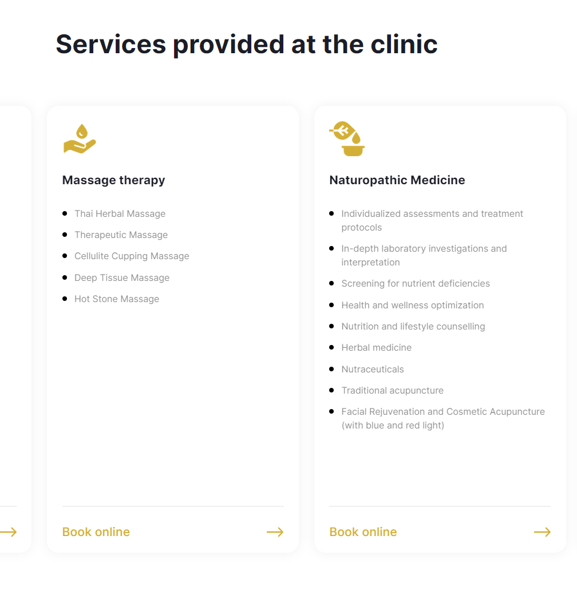
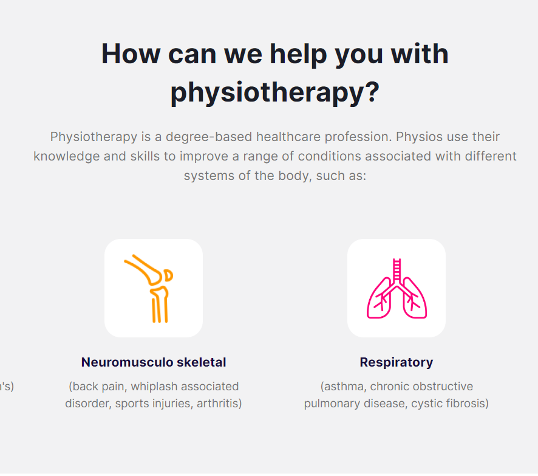
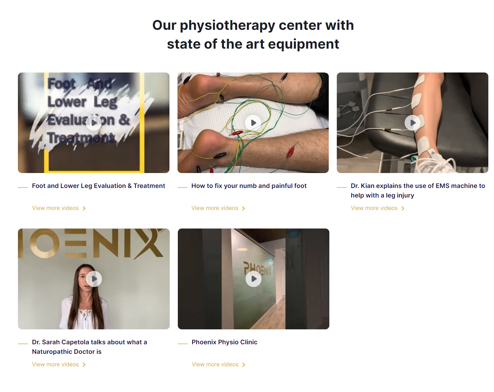
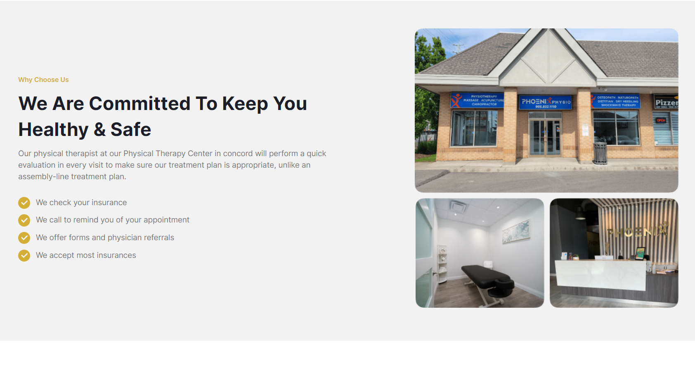
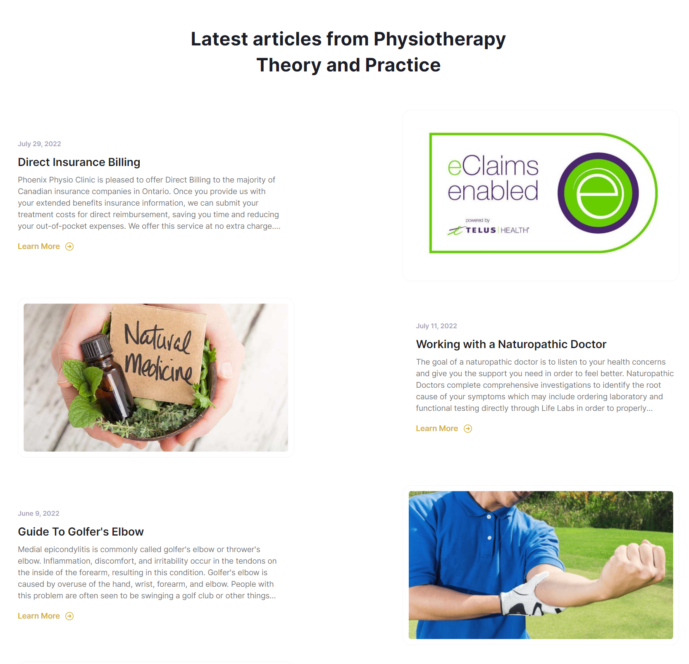
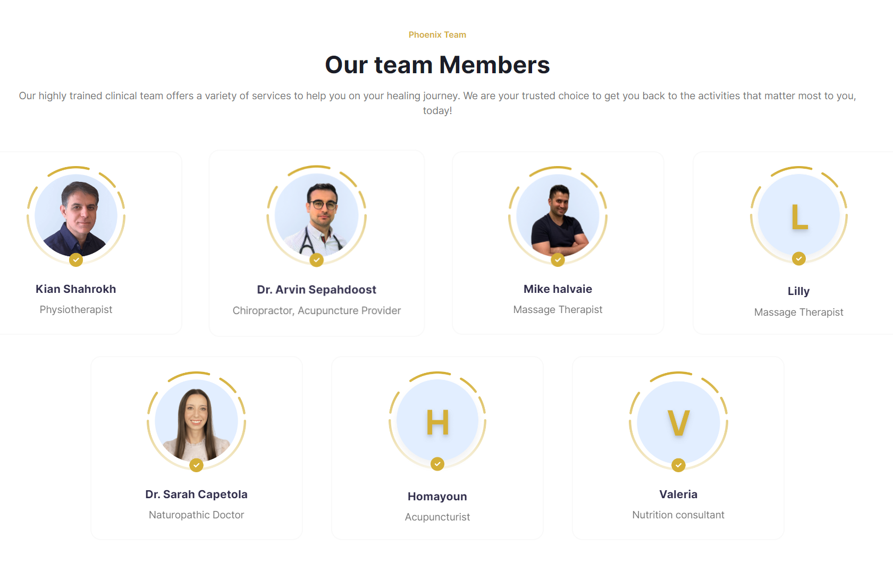
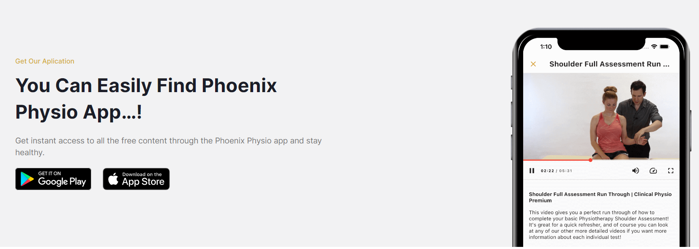
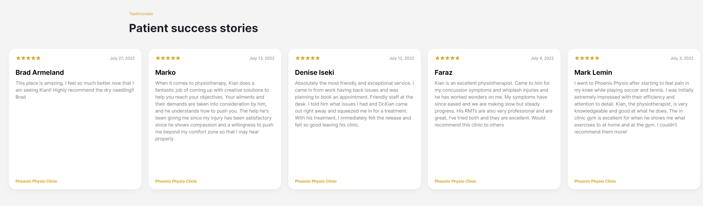

Introduction
As a beginner in web development, I was tasked with building a website for a physiotherapy clinic using only HTML. Despite having no prior experience in building a website, I took on the challenge and learned a lot throughout the process. As I coded the website, I researched different HTML tags, learned how to structure a webpage, and experimented with different styles and layouts. I encountered several challenges, such as figuring out how to create a responsive design that would work on different screen sizes, but I persevered and was able to overcome them with the help of online resources and tutorials. Overall, building the website for the physiotherapy clinic was a valuable learning experience that helped me improve my coding skills and gain confidence in my ability to tackle new challenges.
To create the physiotherapy website, I used a variety of HTML and other coding techniques to design a visually appealing and user-friendly website. I included pictures and videos to showcase the clinic's facilities and services, and used HTML to format the layout of the website with tabs to make navigation easy for visitors. I also incorporated articles and blog posts to provide valuable information about physiotherapy and related health topics. Additionally, I utilized CSS to style the website and make it responsive across different devices, improving the user experience for both desktop and mobile users. Through this process, I was able to learn and apply a wide range of coding techniques to create a fully functional and professional-looking website for the physiotherapy clinic.
The Website
While coding the website for Phoenix Physio Clinic, I had the opportunity to work closely with the clinic's owner to ensure that the website met his vision and needs. We collaborated on the design, layout, and content of the website, making sure that it accurately represented the clinic's services, values, and branding. Through regular communication and feedback, we were able to create a website that not only looked visually appealing but also provided a seamless user experience for potential clients. It was a great experience working alongside the owner to bring his vision to life and deliver a website that exceeded his expectations.
Landing Page
As part of my work on the Phoenix Physio Clinic website, I was responsible for developing the landing page. Using my HTML and CSS skills, I was able to create an aesthetically pleasing and functional landing page that effectively captured the attention of potential clients. Working alongside the clinic owner, I made sure to incorporate his vision and branding into the design of the page, ensuring a cohesive look and feel throughout the website. Additionally, I utilized various tools and techniques to optimize the page for search engine ranking and ensure a smooth user experience for visitors. Overall, I am proud of the work I did to develop a high-quality landing page that effectively represents the Phoenix Physio Clinic online.
Article Page

As an integral part of my work on the Phoenix Physio Clinic website, I undertook the development of an article page where I wrote a series of compelling articles, numbering over 10, that were aimed at enhancing the knowledge and understanding of various physiotherapy topics. Some of the subjects that I covered in my articles included spinal osteoarthritis, dry needling, and Golfer's Elbow. In writing these articles, I collaborated closely with the clinic owner to ensure that the content was informative, accurate, and perfectly aligned with his vision for the website. Subsequently, I converted the articles into code, allowing them to be effortlessly accessed by users of the website. This process allowed me to sharpen my research, writing, and coding skills, and at the same time, contributed significantly to the overall quality of the website.
Images







